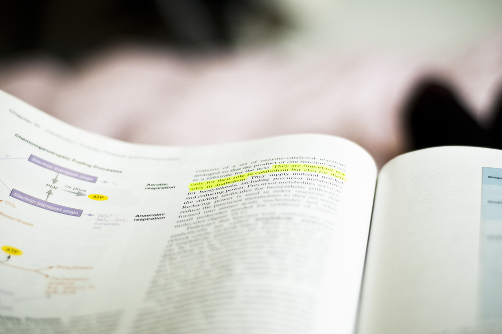

Reflection Essay
The transition
When you go from being a pupil to becoming a student, this entails a greater responsibility. As a student, you are used to having a plan to follow and a teacher who follows you up and is responsible for your learning. At university, it does not work that way. The syllabus is reviewed much faster then you become dependent on self-study to keep up. You will also have to take care of submission deadlines yourself in order to be able to take the exam at all. In high school, everything is clear regardless of the grades, but here you have to earn it. With self-discipline, this transition has not been so great, and it has really been good. You are used to having a lot to do anyway.
At the university, you also have a responsibility to acquire a network. In high school, you are in a regular class, where you see each other most of the time at school. Fortunately, there are good opportunities to make friends at the university with various events. And here you can also meet several who do not study the same as well, but are also in the same "life situation".
As a student, you also have more freedom. You usually go to high school near where you live, while many move away from home to start university. This means that you have to take more control of your own life and become more independent. This has been exciting, fun and not least educational. It's great to be able to decide for yourself what you want for dinner.

The workload is increasing in higher education. In upper secondary school, you have several subjects and you do not go as deep into the subjects. Then there is also a teacher who teaches you homework and tests. There you can spend several weeks on a topic. At the university, you have fewer subjects and thus more syllabus. Again, the university is freer in the form of you choosing how you want to work with the subject and not least when. At the university you have an exam every semester, while at upper secondary school you have an exam at the end of the year. In addition, the number of exams varies and thus the workload can vary. If you find a study technique that works for you, and if you find a group you can work with, it will be fine to handle the amount of work that is.
To sum it all up, the transition from upper secondary school comes with pros and cons.
Back to home